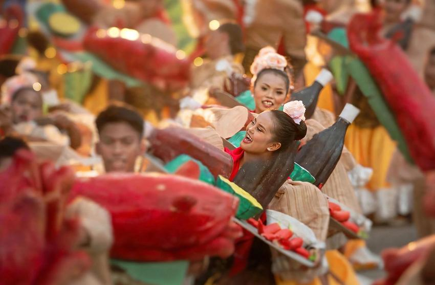

Halad Inasal is the fiesta of Talisay City, held every October 15 for its patron saint, Santa Teresa de Avila. The day combines a church feast with street dancing and a showdown built around lechon, the roast pig Talisay is known for. If you are in Cebu on that date, or planning ahead for the next one, this guide covers what happens, how the format has changed, and how to get there from Cebu City.
Talisay is known as the Lechon Capital of Cebu. The lechon the town is famous for goes by the local nickname inasal, and the festival name pairs that word with Halad. Talisay shares its lechon reputation with Carcar, the other Cebu town best known for the dish. The festival was launched in 2005 to promote the city through its lechon, and dance groups still build their routines around lechon-themed costumes and props.

The festival is a single day, but its schedule has a clear shape. The morning belongs to the church. The afternoon belongs to the street. The evening ends with the showdown. Knowing that order helps you plan where to stand and when to eat.
What Happens on October 15
Morning mass and the church grounds
The day opens with a fiesta mass at the Sta. Teresa de Avila church in the poblacion. In 2026 the mass started at 10 a.m. Dancers gather around the church grounds, which is also where the street dancing begins. Arrive early if you want to see the groups assemble, since the grounds fill quickly and the streets around them close to traffic.
Street dancing through town
Groups from Talisay's barangays dance through the streets in colorful costumes. In 2026 the contingents were organized as five clusters drawing on 22 barangays, which gives the parade a neighborhood feel. The route runs from the church area to the open lot in front of Talisay City Hall, so the dancing gradually moves toward the showdown rather than staying in one place.
The showdown and free lechon
The ritual showdown takes place in the vacant lot across from Talisay City Hall, a space locals also call Hawan. Before the showdown, the city gave away 25 lechon to spectators in 2026. The pork was for eating on the spot, not for takeout. The free portions are limited, so arrive well before the showdown if you want one. The performances are the main event, and the lechon is a generous bonus rather than the reason to rush.
How the Format Has Changed
The festival does not look the same every year. In 2025 the city reduced the dancing contingent to about 50 dancers, and reports from that year say the ritual showdown was dropped. The 2026 coverage describes the showdown and free lechon as part of the day. Check the Talisay City Hall announcements and local news in the weeks before October 15 for the current schedule and venue, and treat older guides, this one included, as a starting point rather than a final word.
Getting There from Cebu City
Talisay sits right beside Cebu City, which makes this a comfortable day trip. Taxis and ride-hailing apps are the simplest option, and the trip is short when traffic is light. The afternoon of October 15 is different. Roads around City Hall slow down as the crowd builds, so allow extra time, or leave earlier than you think you need to.
Jeepneys also run between the two cities. Board one heading to Talisay and tell the driver you are going to Talisay City Hall, then walk the last stretch if the road is closed. Ask a local driver which drop-off point is closest on the day, since the road closures can shift from year to year.
If you are coming from Iloilo, the usual approach is to fly or take a ferry to Cebu first, then travel to Talisay the same way as anyone starting in Cebu City. That makes Halad Inasal a practical stop on a longer Visayas trip, as long as you plan the Cebu arrival and departure around the festival hours.
Where to Eat Lechon Around the Festival
The free lechon is a one-time treat on the day. For a proper meal, buy lechon by the kilo from a stall and ask the price before ordering, because prices vary with the stall and the size of the pig. Ask for the skin separately if you like it extra crisp, and pair the meat with rice and achara. If you want to compare lechon across Cebu, the where to eat lechon in Cebu guide covers six places by type of meal, and tasting both Talisay and Carcar lechon is the fairest way to settle the rivalry for yourself.
Practical Tips for the Day
October is still rainy season in Cebu, so carry a light poncho along with water and sunscreen. The afternoon heat and the crowd around the showdown lot make both essentials. Keep your phone and wallet in front of you when the space tightens. Large backpacks are awkward in that crowd, so bring a small bag instead.
Be respectful during the morning mass, keeping loud music and noise away from the church. Ask performers before taking close photos, since some props are heavy and the dancers are working in tight formation. Wear comfortable shoes, because most of the day is spent standing on concrete.
For a broader sense of when to visit Cebu, the month-by-month guide to visiting Cebu explains how weather and crowds shift through the year, which is useful if your trip is not built around October 15.
Is Halad Inasal Worth the Trip?
Yes, if you want a fiesta built around food and local pride rather than a large resort-style event. It is a street festival you can watch from the roadside, it is close to Cebu City, and it works well as a single day in a Cebu itinerary. The format changes from year to year, so plan around the official announcement and treat the parade and showdown as the highlights.
If you are also planning the bigger festival calendar, the Sinulog 2027 guide covers Cebu City's own celebration, which draws a much bigger crowd and works well alongside a Talisay visit.